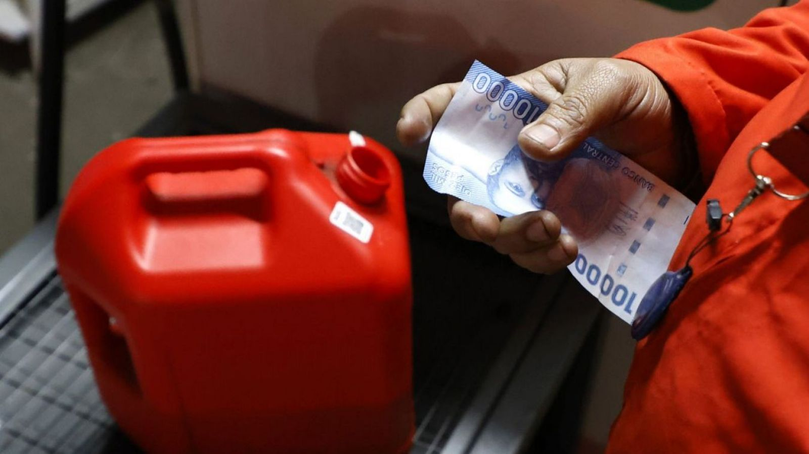

Noticias Generales
| Título | Categoría | Artículo |
|---|---|---|
| Fiestas Patrias: ¿Cuándo se debe izar la bandera? | Datos y servicios |
La bandera nacional debe izarse los días 17 y 18 de septiembre en todo el país; no hacerlo puede significar multas.
|
| Desde este jueves: ENAP anuncia leve alza en el precio de la parafina | Actualidad |
La Empresa Nacional del Petróleo informó un aumento en el valor de la parafina a partir del jueves, afectando a las familias que dependen de ella para calefacción.
 |
| Fiscalía de Osorno abre investigación por torturas a funcionario con TEA | Actualidad / Judicial |
El Ministerio Público inició una investigación por presuntas torturas a un funcionario municipal con Trastorno del Espectro Autista, tras denuncias presentadas por su familia.
|